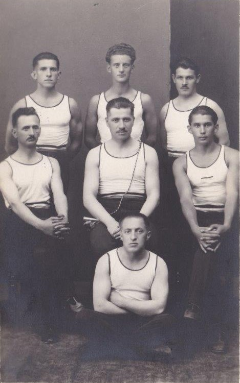
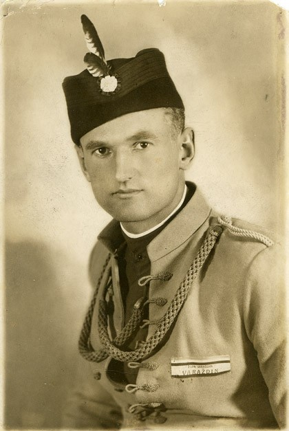
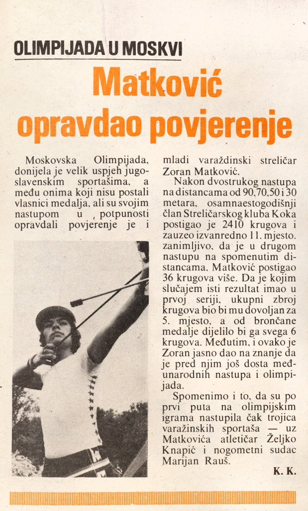
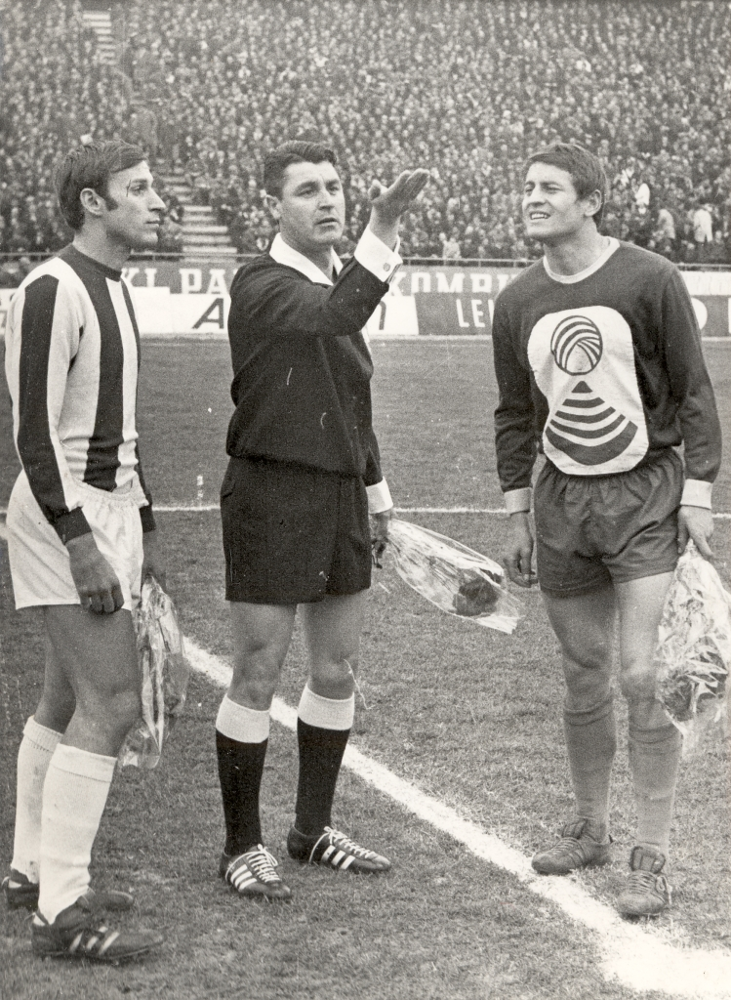

Varaždinci i Olimpijske igre
KRONOLOGIJA
4. - 27. 7.1924.
Stjepan Bocak kao pričuva nogometne reprezentacije Kraljevine SHS koji su ispali u I. kolu na OI u Parizu
4. 7. - 27. 7.1924.
Branko Zinaja kao pričuva nogometne reprezentacije Kraljevine SHS koji su ispali u I. kolu na OI u Parizu
1. - 16. 8. 1936.
Rudolf Markušić, bacanje koplja, ispao u prednatjecanju na X. OI u Berlinu


Prednjački zbor Hrvatskog sokola, stoje: Agnezović, Grims i Markušić, Varaždin, 1929., GMV 102656
1. - 16. 8. 1936.
Mirko Vincens,u disciplini kajak F - 1 na 10 000 m osvojio 11. mjesto na X. OI u Berlinu
5. 7. - 16. 8. 1948.
Stjepan Boltižar, u višeboju pojedinačno 77. i ekipno 10. na XIV. OI u Londonu
5. 7. - 16. 8. 1948.
Zvonimir Cimermančić u sastavu nogometne reprezentacije FNR Jugoslavije koja je osvojila srebnu medalju na XIV. OI u Londonu
29. 7. - 14. 8. 1952.
Ivan Čaklec, u višeboju pojedinačno 144., a ekipno 10. mjesto na XV. OI u Helsinkiju
29. 7. - 14. 8. 1952.
Rudolf Vuk, u discplini MK pištolj 50 m osvojio 23 mjesto na XV; OI u Helsinkiju
29. 7. - 14. 8. 1952.
Zvonimir Suligoj, gimnastički sudac na XV. OI u Helsinkiju

Zvonimir Suligoj, Varaždin, 1936., GMV 1255/2005
25. 8. - 11. 9. 1960.
Antun Zvonko Bezjak u disciplini bacanje kladiva osvojio 6. mjesto na XVII. OI u Rimu
25. 8. - 11. 9. 1960.
Ivan Čaklec, u višeboju pojedinačno 56., a ekipno 9. mjesto na XVII. OI u Rimu
10. - 24. 10. 1964.
Ivan Čaklec, u višeboju pojedinačno 80., a ekipno 11. mjesto na XVIII. OI u Tokiju
12. - 27. 10. 1968.
Karlo Čović u hrvanju grčko rimskim stilom nastupao je u kvalifikacijama XIX. OI u Ciudad Mexico
26. 8. - 11. 9. 1972.
Karlo Čović u hrvanju grčko - rimskim stilom nastupio je u kvalifikacijama XX. OI u Műnchenu
26. 8. - 11. 9. 1972.
Dobrivoje Selec u sastavu rukometne reprezentacije SFR Jugoslavije koja je osvojila zlatnu medalju na XX. OI u Műnchenu
19. 7. - 3. 8. 1980.
Željko Knapić u štafetnoj utrci 4 x 400 m u prednatjecanju na XXII. OI u Moskvi
19. 7. - 3. 8. 1980.
Zoran Matković u disciplini dvostruka FITA osvojio pojedinačno 11. mjesto na XXII. OI u Moskvi

Matković opravdao povjerenje, Varaždinske vijesti, 1980., GMV Knjižnica
19. 7. - 3. 8. 1980
Marijan Rauš, nogometni sudac na OI u Moskvi

Dragan Đajić, Marijan Rauš i Slaven Zambata, oko 1970., GMV 106606
17. 9. - 2. 10. 1988.
Bernard Ban u hrvanju grčko - rimskim stilom nastupio u kvalifikacijama na OI u Seulu
17. 9. - 2. 10. 1988.
Viktor Plavec nastupio kao boksački sudac na XXIV. OI u Seulu

Viktor Plavec, GMV 106565
19. 7. - 4. 8. 1996.
Saša Hiršzon u paru s Goranom Ivaniševićem ukupno dijele 5. - 8. mjesto na OI u Atlanti
19. 7. - 4. 8. 1996.
Davorin Nakić, košarkaški sudac na OI u Atlanti
13. - 29. 8. 2004.
Blaženko Lacković u sastavu rukometne reprezentacije koja je osvojila zlatnu medalju na Oi u Ateni